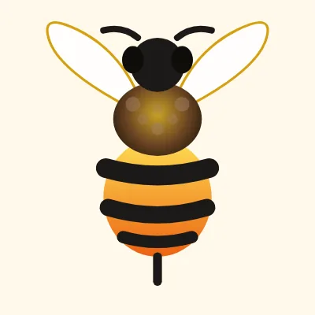
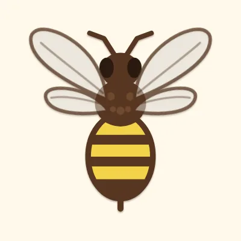
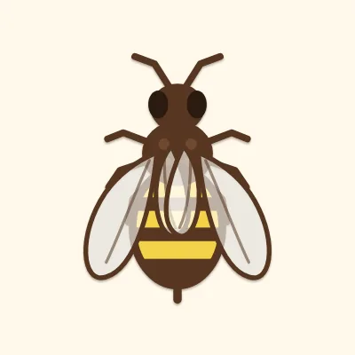

Before and after.
Drag the divider on each section. Left is the site today, right is the new one.
Same photo, warmer.
A nav with a cart, and two buttons into the shop and the apiary. Warm brown-black replaces the slate blue, with a softer serif for headlines and a cleaner typeface for text.
Icons that mean something.
The same three promises, with a drop, a flower and a jar in place of a checkmark, a pin and a clock.
Same posts, softer frame.
The three Instagram posts stay, with gentler shadows and a "View on Instagram" label on hover.
From a DM to a cart.
Every jar gets its own Add to cart button in place of the single DM button. Stock shows when a size runs low, and checkout happens on the site.
Matches the top.
The same links, on the warm brown-black from the first screen.
Drawn like the logo.
It still follows the pointer. Now it keeps its distance from fast moves, carries every jar you add into the cart, and lands and dozes off when you stop.


